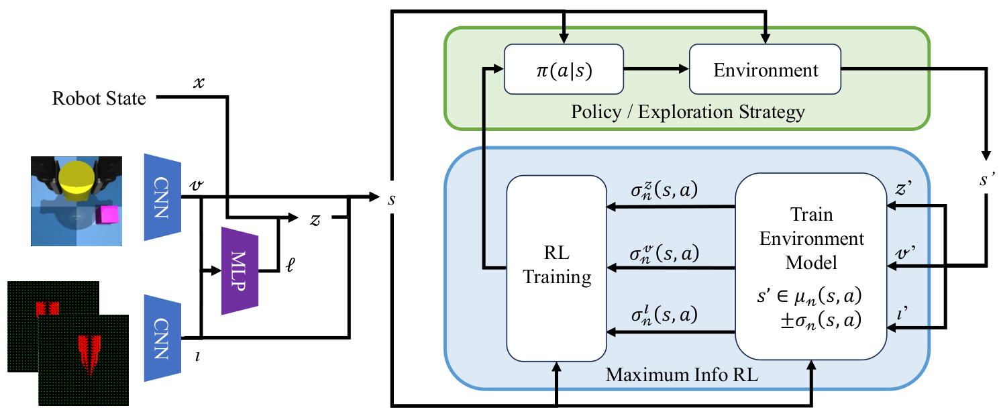
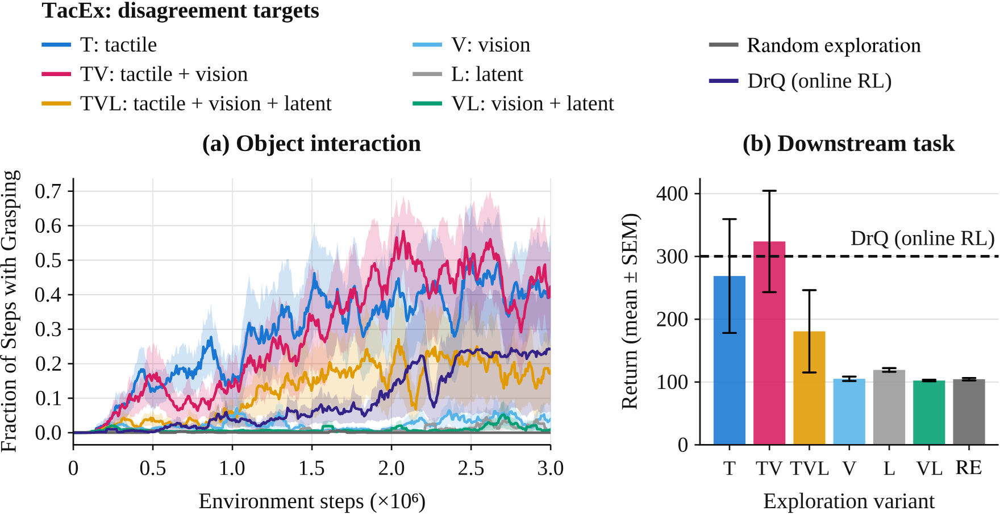

Tactile Curiosity Drives Robot Interaction
1 ETH Zürich2 University of California, Berkeley
* Equal contribution
Meet us at the 10th Conference on Robot Learning (CoRL 2026) from November 9-12 in Austin, Texas! 🤠
TacEx uses tactile predictive uncertainty to guide exploration in robotic manipulation, from reward-free data collection to steering frozen vision-language-action policies. In our simulations, this encourages contact-rich interaction and yields experience that can support downstream manipulation learning.
The rollout video is not available in this copy of the page. See the experiments in the paper.
Overview
Random exploration can spend training interactions moving a gripper through free space instead of discovering the contacts that reveal how objects move and can be grasped. Uncertainty-driven exploration can allocate interactions to unpredictable transitions that contribute little to manipulation. We study whether uncertainty over tactile feedback provides a useful inductive bias for collecting contact-rich experience. TacEx explicitly weights tactile model disagreement in an exploration objective that separates visual, tactile, and latent-state predictive uncertainty.
We evaluate this approach in two simulation settings. In reward-free exploration, the agent collects data without task rewards or expert demonstrations. The fixed dataset is then used to train downstream pick-and-place policies offline. In diffusion steering, a lightweight policy learns to select noise inputs for a frozen vision-language-action (VLA) model using task reward and an uncertainty bonus.
Modality-weighted exploration
TacEx builds on MaxInfoRL, replacing an aggregate model-disagreement bonus with separately weighted prediction uncertainties. Separate encoders produce a visual embedding from RGB images and a tactile embedding from spatial force maps. These embeddings, together with a latent robot-state representation , form the learner state . An ensemble dynamics model is trained on collected transitions to estimate predictive disagreement for each representation.

The overview figure is not available in this copy of the page. View Figure 1 in the paper.
The exploration bonus is
The non-negative weights control the contribution of each prediction target. The bonus enters the policy objective alongside task value and action entropy. Changing the weights changes the exploration incentive, not which observations the policy receives. A tactile-only bonus is one configuration, and visual or latent disagreement can provide complementary guidance.
Experiments
Reward-free exploration and offline learning
We compare modality-weighted exploration with random action sampling in single- and multi-object scenes. During data collection, the exploration agents receive neither task rewards nor expert demonstrations. Variants with tactile disagreement interact with and attempt to grasp objects more frequently than variants without an explicit tactile prediction target.
After exploration, we freeze the replay buffer, relabel the transitions with a pick-and-place reward, and train a soft actor-critic (SAC) policy entirely offline, with no additional environment interaction. Data collected with tactile disagreement yields higher downstream returns in these experiments.

The results figure is not available in this copy of the page. View Figure 2 in the paper.
Multi-object exploration
In a setting with multiple objects, tactile disagreement encourages contact, while adding visual disagreement broadens the distribution of grasps across objects. Tactile-only exploration gives higher downstream performance on the evaluated pick-and-place task, which targets a single object. Our results illustrate a trade-off between focused contact and interaction diversity.
The video is not available in this copy of the page. View the original GIF.

Diffusion steering of a frozen VLA
A lightweight steering policy learns to select the diffusion noise , which a frozen VLA policy maps to robot actions. The base VLA retains its pretrained visual, proprioceptive, and language inputs. Tactile observations are added to the steering policy and critics; the VLA backbone is not updated.
We evaluate on eight contact-rich LIBERO-90 tasks, using the same pretrained checkpoint and the same online interaction budget per task across methods. DSRL-SAC learns from sparse task reward without tactile inputs; DSRL-TacEx adds tactile observations and modality-weighted disagreement. Although the VLAs are initially pre-trained without tactile feedback, post-training with TacEx substantially improves downstream performance while remaining highly sample-efficient.
The video is not available in this copy of the page. View the original GIF.

Conclusion
TacEx biases exploration toward tactile predictive uncertainty. In our simulations, this encourages contact-rich interaction and yields experience that supports downstream manipulation learning. Data collected without task rewards can be used to train a pick-and-place policy offline, without further environment interaction. Tactile uncertainty also guides exploration when steering a frozen vision-language-action policy, improving learning on several contact-rich tasks. Our results suggest that distinguishing between sensory modalities can help direct exploration toward interactions relevant to manipulation.
BibTeX
@article{iten2026tactile,
title = {Tactile Curiosity Drives Robot Interaction},
author = {Iten, Klemens and Proshkin, Alex and Sukhija, Bhavya
and Coros, Stelian and Krause, Andreas and Abbeel, Pieter
and Sferrazza, Carmelo},
journal = {arXiv preprint arXiv:2609.40134},
year = {2026},
url = {https://arxiv.org/abs/2609.40134}
}Funding acknowledgments
This research received support from NCCR Automation, a National Centre of Competence in Research funded by the Swiss National Science Foundation (grant 51NF40_225155), from the ONR Multidisciplinary University Research Initiative (MURI) (award N00014-22-1-2773), and from ELSA (European Lighthouse on Secure and Safe AI), funded by the European Union under grant agreement 101070617.